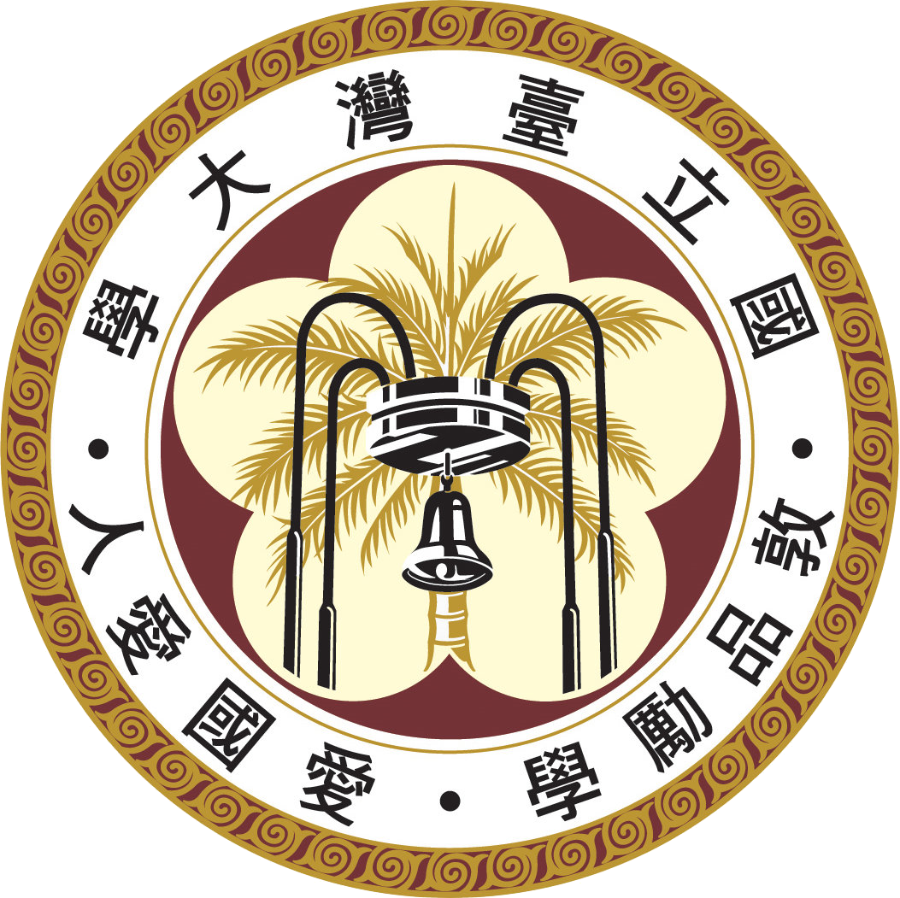

We are a group of representation theorists (in the broad sense) from Academia Sinica, National Central University, National Center of Theoretical Sciences, National Taiwan Normal University,
National Taiwan University and National Tsing Hua University.
We run an informal weekly learning seminar on representation theory and related topics.

|

|
 |
Contact
2020 Fall: Learning Seminar on Soergel Bimodules
Where and when?- First/Organizational meeting: Academia Sinica, room 617, time: Sep 18 poll, Friday 1 - 2 pm
- Usual meeting: Academia Sinica, room 638, time: Friday 1 - 2:30 pm
- Exception: National holidays on 10/02(Mid-Autumn), 10/09(National Day observed) and 01/01(New Year).
- Introduction to Soergel bimodules by B. Elias, S. Makisumi, U. Thiel, G. Williamson link, toc
- Supplementary material for the Introduction to Soergel bimodules link
- Master class on Soergel bimodules by B. Elias and G. Williamson link
- 2020/09/18, speaker: Chun-Ju Lai, topic: An overview notes video
- 2020/09/25, speaker: Ziqing Xiang, topic: Chp 1: How to think about Coxeter groups notes video
- 2020/10/07 (We), time: 2pm - 3pm, Exercise session, location: AS 638
- 2020/10/16, speaker: Chih-Whi Chen, Wei-Hsuan Yu, topic: Chp 2: Reflection groups and Coxeter groups notes video
- 2020/10/19 (Mo), time: 10 - 11:30am, Exercise session, location: AS 638
- 2020/10/22 (Th), time: 1pm - 2:30pm, speaker: Sheng-Fu Chiu, topic: Chp 3: The Hecke algebras and Kazhdan-Lusztig polynomials notes video
- 2020/10/30, speaker: Cheng-Chiang Tsai, topic: Chp 4: Soergel Bimodules notes video
- 2020/11/02 (Mo), time: 10 - 11:30am, Exercise session, location: AS 638
- 2020/11/06, speaker: Chun-Ju Lai, topic: Chp 5: The “classical” theory of Soergel bimodules notes video
- 2020/11/09 (Mo), time: 3:30 - 5pm, Exercise session, location: AS 638
- 2020/11/13, speaker: Ziqing Xiang, topic: Chp 7-9, part I: How to draw monoidal categories and Jones–Wenzl projectors notes video
- 2020/11/16 (Mo), time: 3:30 - 5pm, Exercise session, location: AS 638
- 2020/11/20, speaker: Ziqing Xiang, topic: Chp 7-9, part II: Frobenius extensions, the one-color calculus, and the Dihedral Cathedral notes video
- 2020/11/23 (Mo), time: 3:30 - 5pm, Exercise session, location: AS 638
- 2020/11/27, speaker: Cheng-Chiang Tsai, topic: Chp 10-11: Generators and relations for Bott–Samelson bimodules and the double leaves basis and The Soergel categorification theorem notes video
- 2020/11/30 (Mo), time: 3:30 - 5pm, Exercise session, location: AS 638
- 2020/12/04, speaker: Sheng-Fu Chiu, topic: Chp 12: How to draw Soergel bimodules video
- 2020/12/07 (Mo), time: 3:30 - 5pm, Exercise session, location: AS 638
- 2020/12/11, speaker: Yu-Lun Cheng, topic: Chp 13-15, part I: Category O and the Kazhdan–Lusztig conjectures notes video
- 2020/12/14 (Mo), time: 3:30 - 5pm, Exercise session, location: AS 638
- 2020/12/18, speaker: Chi-Whi Chen, topic: Chp 13-15, part II: Soergel’s V functor and the Kazhdan–Lusztig conjecture notes video
- 2020/12/21 (Mo), time: 3:30 - 5pm, Exercise session, location: AS 638
- 2020/12/25, speaker: Chun-Ju Lai, topic: Chp 16: Lightning introduction to perverse sheaves notes video
- 2020/12/28 (Mo), time: 3:30 - 5pm, Exercise session, location: AS 638
- 2021/01/08, speaker: Cheng-Chiang Tsai, topic: Chp 17: Hodge theory and Lefschetz linear algebra notes video
- 2021/01/11 (Mo), time: 3:30 - 5pm, Exercise session, location: AS 638
- 2021/01/15, speaker: Cheng-Chiang Tsai, topic: Chp 18: The Hodge theory of Soergel bimodules video
- 2021/01/18 (Mo), time: 3:30 - 5pm, Exercise session, location: AS 638
- 2021/01/22, speaker: Chun-Ju Lai, topic: Chp 19: Rouquier complexes and homological algebra notes video
- 2021/01/25 (Mo), time: 3:30 - 5pm, Exercise session, location: AS 638
- 2021/01/29, speaker: Ziqing Xiang, topic: Chp 20: Proof of the hard Lefschetz theorem video
- 2021/03/05, speaker: Sheng-Fu Chiu, Special episode: Koszul duality for the Hecke category notes
2021 Spring: Learning Seminar on Kac-Moody groups
Where and when?- Organizational meeting: AS 638, time 1-2pm
-
Usual meeting: AS 638, time 1-2:30pm
Exercise session: AS 638, 10am on Mondays. - First meeting: AS 638, time 1-2:30pm
- Exception: National holiday on Apr 02 (Children's Day observed), on Apr 30 (Labor Day observed).
- Kac-Moody Groups, their Flag Varieties and Representation Theory by Shrawan Kumar link, toc, appendices
- 2021/02/26, speaker: Chun-Ju Lai, topic: An Overview notes video
- 2021/03/12, speaker: You-Cheng Chou, topic: Kac-Moody Algebras: Basic Theory notes video
- 2021/03/19, speaker: Yung-Ning Peng, topic: Representation Theory of Kac-Moody Algebras, I notes video
-
2021/03/26, speaker: Yung-Ning Peng, topic: Representation Theory of Kac-Moody Algebras, II
notes
video
2021/03/26, speaker: Chih-Whi Chen, topic: Lie Algebra Homology and Cohomology, I notes video - 2021/03/30 (Tu), time: 10 - 11am, Exercise session, location: AS 638
- 2021/04/09, speaker: Chih-Whi Chen, topic: Lie Algebra Homology and Cohomology, II notes notes video
- 2021/04/16, speaker: Ziqing Xiang, topic: An Introduction to ind-Varieties and pro-Groups notes video
- 2021/04/23, speaker: Kazuki Tokimoto, topic: Tits Systems: Basic Theory notes video
-
2021/05/07, speaker: Kazuki Tokimoto, topic: Kac-Moody Groups: Basic Theory
notes
video
speaker: Chun-Ju Lai, topic: Generalized Flag Varieties of Kac-Moody Groups, I notes video - 2021/05/14, speaker: Chun-Ju Lai, topic: Generalized Flag Varieties of Kac-Moody Groups, II notes video
- 2021/06/11, speaker: Siye Wu, topic: Demazure and Weyl-Kac Character Formulas
- 2021/06/18, speaker: Ziqing Xiang, topic: BGG and Kempf Resolutions video
- 2021/06/25, speaker: Chun-Ju Lai, topic: Defining Equations of G/P and Conjugacy Theorems notes video
- 2021/07/02, speaker: Chun-Ju Lai, topic: Topology of Kac-Moody Groups and Their Flag Varieties notes video
- 2021/07/09, speaker: Chun-Ju Lai, topic: Smoothness and Rational Smoothness of Schubert Varieties notes video
- 2021/07/16, speaker:Yung-Ning Peng, topic: An Introduction to Affine Kac-Moody Lie Algebras and Groups notes video
2021 Fall: Learning Seminar on Geometric Representation Theory
Where and when?- Organizational meeting: AS 638, Sep 29, 1 - 2:30pm
- Usual meeting: AS 638, Wednesdays, 1 - 2:30pm
- Neil Chriss and Victor Ginzburg, Representation Theory and Complex Geometry link, toc+intro.
- Victor Ginzburg, Geometric Methods in Representation Theory of Hecke Algebras and Quantum Groups arxiv
- Victor Ginzburg and Eric Vasserot, Langlands reciprocity for affine quantum groups of type A_n, IMRN (1993) link
- Eric Vasserot, Affine quantum groups and equivariant K-theory, Trans. Groups (1999) link
- 2021/09/29, speaker: Chun-Ju Lai, topic: An Overview notes video
- 2021/10/06, speaker: Chung-I Ho, topic: 1.1-3 Symplectic geometry I: Poisson structures notes video
- 2021/10/13, speaker: Sheng-Fu Chiu, topic: 1.4-6 Symplectic geometry II: Moment maps, coisotropics and Lagrangians notes video
- 2021/10/20, speaker: Siye Wu, topic: 2.3-5 projective varieties with C*-actions and more video
- 2021/10/27, speaker: Adeel Khan, topic: 2.6-7 Borel-Moore homology video
- 2021/11/03, speaker: You-Hung Hsu, topic: 3.1 Semisimple Lie algebras and flag varieties video
- 2021/11/10, speaker: Cheng-Chiang Tsai, topic: 3.2-3 Nilpotent cones, Springer resolutions and Steinberg varieties notes video
- 2021/11/17, speaker: Harrison Chen, topic: 3.4-6 Springer theory for Weyl groups notes video
- 2021/11/24, speaker: Kazuki Tokimoto, topic: 4.1-2 Springer theory for U(sl(n)) notes video
- 2021/12/01, speaker: Chun-Ju Lai, topic: 4.3-4 Stabilization for U(sl(n)) and U_q(sl(n)) notes video
- 2021/12/08, speaker: You-Hung Hsu, topic: 5.1-6.2 Equivariant K-theory, I notes video
- 2021/12/15, speaker: You-Hung Hsu, topic: 5.1-6.2 Equivariant K-theory, II video
-
2021/12/22, speaker: You-Hung Hsu, topic: 5.1-6.2 Equivariant K-theory, III
video
speaker: Chun-Ju Lai, topic: 7.1 Affine Weyl groups and Affine Hecke Algebras, I notes video -
2021/12/29, speaker: Chun-Ju Lai, topic: 7.1 Affine Weyl groups and Affine Hecke Algebras, II
notes
video
speaker: Harrison Chen, topic: 7.2-6 K-theory and Affine Hecke Algebras, Ia notes video
-
2022/01/05, speaker: Harrison Chen, topic: 7.2-6 K-theory and Affine Hecke Algebras, Ib
video
speaker: Chun-Ju Lai, topic: 7.2-6 K-theory and Affine Hecke Algebras, II notes video - 2022/01/12, speaker: Cheng-Chiang Tsai, topic: 8 Representation Theory of Affine Hecke algebras notes video
2022 Spring: Learning Seminar on Double Affine Hecke Algebras
Where and when?- Organizational meeting: AS 638, time 2022/02/25 1:30-3pm
- Usual meeting: AS 638, Fridays 1:30-3pm
- Exception: NCTS minicourse 04/01-04/29, National holidays on 06/03 (Dragon Boat Festival).
- Etingof's Lecture Notes on Cherednik Algebras
- Etingof's book on Calogero-Moser systems and Representation Theory
- Macdonald's book entitled Affine Hecke algebras and orthogonal polynomials
- Varagnolo-Vasserot's survey paper on DAHA and Flag Manifolds
- Cherednik's arxiv paper on Intro to DAHA
- 2022/02/25, speaker: Chun-Ju Lai, topic: An Overview notes video
- 2022/03/04, speaker: Yung-Ning Peng, topic: degenerate affine Hecke algebras and Yangians notes video
- 2022/03/17, speaker: Cheng-Chaing Tsai, topic: Representation theory of Degenerate Affine Hecke Algebras, I notes video
-
2022/03/18, speaker: Cheng-Chaing Tsai, topic: Representation theory of Degenerate Affine Hecke Algebras, II
video
speaker: Ziqing Xiang, topic: Category O of rational Cherednik algebras I video - 2022/03/25, speaker: Ziqing Xiang, topic: Category O of rational Cherednik algebras II video
- 2022/05/06, speaker: Cheng-Chaing Tsai, topic: Finite Dimensional Simple Modules over Rational Cherednik Algebras notes video
- 2022/05/13, speaker: Harrison Chen, topic: Whittaker Modules, Parabolic Induction and Restriction Functors notes video
- 2022/05/20, speaker: Chun-Ju Lai, topic: The Knizhnik-Zamolodchikov Functor notes video
- 2022/05/27, speaker: You-Hung Hsu, topic: Rational Cherednik Algebras for Orbifolds video
- 2022/06/10, speaker: Siye Wu, topic: Quantum Calogero-Moser spaces video
- 2022/06/17, speaker: Harrison Chen, topic: Geometric representation theory of DAHA, I video
- 2022/06/24, speaker: You-Hung Hsu, topic: Geometric representation theory of DAHA, II video
2023 Spring: Learning Seminar on Integral Hecke Algebras
Organizers: Wille Liu and Tzu-Jan Li Where and when?- First meeting: AS 638, time 2023/3/14 2-4pm
- Usual meeting: AS 638, Tuesdays 2-4pm
- Exception: National holiday on 04/04.
- Fintzen-Scholze's outline to ARithmetische Geometrie OberSeminar (ARGOS), 2022 Summer
- Vignéras's Représentations l-modulaires d'un groupe réductif p-adique avec l≠p link
- 2023/03/14, speaker: Tzu-Jan Li, topic: Smooth representation theory, cuspidal representations notes video
- 2023/03/21, 28, speaker: Wille Liu, topic: Parabolic induction, finiteness results notes video
- 2023/04/07, 11, speaker: Cheng-Chiang Tsai, topic: Bernstein decomposition and Bernstein center notes video
- 2023/04/18, speaker: Chun-Ju Lai, topic: Second Adjunction notes video
- 2023/04/25, speaker: Cheng-Chiang Tsai, topic: Depth and decomposition notes video
- 2023/05/02, speaker: Harrison Chen, topic: Moduli of Langlands parameters notes video
- 2023/05/23, speaker: Wille Liu, topic: Finiteness on L-parameters notes video
- 2023/05/30, speaker: Tzu-Jan Li, topic: Finiteness on the group side notes video
- 2023/06/20, speaker: Harrison Chen, topic: Moduli of Langlands parameters notes video
2023 Fall: Learning Seminar on R-Matrices
Where and when?- Organizational meeting: AS 638, time 2023/08/31 10am-11am
- Usual meeting: AS 638, 10am-12pm
- Exception: 2023/11/10 (Fr) Staff Trip.
- Maulik-Okunkov's book entitled ``Quantum Groups and Quantum Cohomology''
- Hernandez's Bourbaki Seminar entitled ``Advances in R-matrices and their applications (after Maulik-Okounkov, Kang-Kashiwara-Kim-Oh,...)''
- Related resources on Halacheva's seminar website
- 2023/10/06, speaker: Chun-Ju Lai, topic: An Overview notes
- 2023/10/13, speaker: Siye Wu, topic: Nakajima varieties
- 2023/10/20, speaker: Hsueh-Yung Lin + Kuan-Wen Lai, topic: Stable envelopes notes
- 2023/10/27, speaker: Emile Bouaziz, topic: Properties of R-matrices notes
- 2023/11/03, speaker: Harrison Chen, topic: Yangians
- 2023/11/09 (Th), speaker: Wille Liu, topic: Further properties of the Yangian
- 2023/12/08, speaker: You-Cheng Chou + Nawaz Sultani, topic: Quantum multiplication
2024 Summer: Learning Seminar on MacDonald Polynomials
Where and when?- Organizational meeting: AS 609, time 2024/06/06 11am-12pm
- Usual meeting: AS 638, 1:30pm-3pm
- Exception: 2024/07/09 (Tu) instead of 07/10 (We); No meeting on 07/17 (We).
- Haiman's notes entitled ``Combinatorics, symmetric functions, and Hilbert schemes''
- MacDonald's book entitled ``Symmetric Functions and Hall Polynomials''
- 2024/06/26, speaker: Wille Liu, topic: Symmetric functions, I
- 2024/07/03, speaker: Wille Liu, topic: Symmetric functions, II
- 2024/07/09 (Tu), speaker: Chun-Ju Lai, topic: The n! and (n+1)^(n-1) conjectures
- 2024/07/24, speaker: Cheng-Chiang Tsai, topic: Hilbert scheme intepretation
- 2024/07/31, speaker: Wille Liu, topic: Haiman's proof
- 2024/08/07, speaker: Chun-Ju Lai, topic: Lusztig varieties and Macdonald polynomials
- 2023/08/14, speaker: Cheng-Chiang Tsai?, topic: TBA
- 2023/08/21, speaker: Wille Liu?, topic: TBA